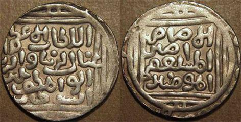

Il y a longtemps que le terme « Steppes sauvages » utilisé dans la littérature historique est entré dans l’usage et est devenu habituel, en remplaçant une vaste période de l’histoire des steppes de Donetsk. Ces derniers temps il a pris une signification politique car certains auteurs forts des informations des sources médiévales des XV-XVIe siècles indiquent qu’ici se trouva un vaste territoire dépeuplé – les « Steppes sauvages » - et l’histoire civilisée de la région ne commence qu’au XVII siècle. Généralement, les sources archéologiques ne sont pas prises en compte. Cependant, ce sont celles-ci qui apportent les preuves principales à considérer pour cette période. Il est connu que le territoire de la région fut très peuplé durant l'âge de pierre. De nombreuses sépultures de l'âge du cuivre et de l’âge du bronze moyen sont hébergées dans le tumulus de Donetsk. Il y eut une immense quantité de colonies sédentaires sur le territoire du Severskiy Donets au Priazovié nord à la fin de l'âge du bronze. La période de l’époque de Scythes et Sarmates est moins connue. Néanmoins les tumulus révèlent des sépultures de cette époque. Le présent article considère les documents concernant la population de la région de Donetsk dans le Moyen Âge. Cette période est particulièrement intéressante car de nombreux peuples contemporains de la région se formaient à cette époque, et sa dernière étape a été marquée par des processus ethniques culturels et migratoires complexes qui sont à l’origine de la formation de la population actuelle du Donbass.
Au IIIe siècle de notre ère un peuple, venu des steppes, fonde un certain nombre de colonies sur les terrasses le long de la rivière Severskiy Donets. Simultanément, sur la rive droite de la rivière sont construits plusieurs villages fortifiés pouvant servir d’abri lors d’attaques ennemies. La population était proche de la culture de Tsaroubintsy et faisait partie des peuples qui participaient à la formation des Slaves. Les villages clairsemés laissés par eux ont existés jusqu'à l'époque de la grande transmigration des peuples. Au Ve siècle, un nouveau flux migratoire, parti également des steppes, vient sur le même territoire. On retrouve les traces de ces colonies de culture Pen’kovskaya au cours moyen du Severskiy Donets, que certains auteurs considèrent comme les tribus d'Antes mentionnées dans les chroniques byzantines. Certaines de ces nouvelles colonies se formèrent sur les territoires de villages préexistants. Mais ce qui n’exclut pas la possibilité que certains peuples des colonies antérieures pouvaient être encore présents lors de l'arrivée des Pen’kovtsi. Ces colonies perdureront jusqu'à l’adhésion à l'État khazar et il est probable que leurs habitants demeureront sur ce territoire à l’époque khazar. Ils seraient ainsi à l’origine de la culture archéologique de Saltovo-Mayatskay.
L’époque khazar a été marquée tout à la fois par le développement et l’épanouissement dans la vie sédentaire et le maintien, pour certains, de la vie nomade sur le territoire de la région. La rivière de Severskiy Donets et sa partie adjacente de steppe étaient surtout populeux. Les monuments situés ici sont nombreux et variés. Ils sont représentés par des villages fortifiés et non fortifiés, des champs funéraires souterrains, des trésors de monnaies et d’objets en fer. La composition ethnique de la population demeure assez complexe. Elle diffère selon les colonies installées le long du cours Severskiy Donets et présente une grande diversité. La population la plus significative est représentée par les Protobulgares turcophones. Un certain nombre de traces archéologiques témoignent que les Alains iranophones et Slaves vécurent avec eux. Par ailleurs, les analyses archéologiques démontrent l’installation de groupes de Magyars dans certaines colonies ainsi qu’une population iranienne qui, probablement, était d’origine de la région d’Asie centrale.
Les principaux vestiges archéologiques sont les anciennes villes qui se fondent au cours moyen du Severskiy Donets dès le VIIIe siècle. Jusqu’à aujourd'hui, il a été dénombré six anciennes villes qui fonctionnaient à l’époque khazar, dans les limites des domaines de Slavianskiy et de Krasnolimanskiy. Quatre d'entre elles sont de grandes dimensions : près du village de Mayaki, de Sydorovo, de Novosiolovka et de la commune urbaine de Kirovskoe, leur superficie respective pouvant atteindre de 60 à 120 ha. L’implantation dense de bâtiments avec des éléments de planification a été démontrée grâce aux fouilles des anciennes villes près des villages de Mayaki et de Sydorovo dans le domaine de Slavianskiy. L’analyse archéologique de ces monuments et des grandes nécropoles, adjacentes à la partie d’habitation, témoignent d’un statut supérieur de ces colonies. Les fouilles font la preuve de l’existence d’artisanats développés. Les mobiliers artisanaux sont surtout représentés près du village de Mayaki, qui était un grand centre d'artisanat. Lors de ses fouilles des traces de la forgerie et de la bijouterie ont été identifiées. La présence à proximité de ces colonies de la grande artère commerçante, connue plus tard comme « Izumskiy chliakh », a probablement contribué à l'activité commerciale des habitants de ces villes. Les découvertes de drachmes sassanides, dirhams arabes, solidus byzantines, pièces de balances et poids dans les anciennes villes témoignent d’une activité commerciale dynamique. De grandes quantités d'amphores céramiques importées, qui ont été produites en Crimée et dans le Taman, sont retrouvées sur les lieux de fouilles. Elles représentent de 35 à 40% de la quantité totale de céramique retrouvée dans l’ancienne ville de Sydorovo. En outre, des fragments de produits en verre importés, d’ une grande rareté pour ces territoires et spécifiques aux grands centres, ont été retrouvés lors des fouilles archéologiques.
Depuis le IXe siècle la propagation des croyances monothéistes est observée parmi des habitants des colonies précitées. Ainsi, un grand nombre de sépultures musulmanes a été trouvé lors des fouilles de nécropoles des ensembles archéologiques près du village de Mayaki et de Sydorovo. L’ensemble archéologique près du village de Sydorovo, près de laquelle il y a du moins de deux grandes nécropoles musulmanes est le site le plus significatif. Apparemment, la communauté musulmane joua dans la vie de ses habitants un rôle prédominent, car le traitement du matériel ostéologique, provenant de ce monument, a montré une absence totale des os de porc dans la colonie.
Croix scandinaveÀ l'exception des Musulmans, les adeptes des autres religions demeurèrent dans les anciennes villes. Les objets de culte chrétien ont été trouvés dans des parties d'habitation des anciennes villes, notamment près du village de Mayaki et de Sydorovo. Dans l’ancienne ville de Mayaki a été exhumé un ensemble de sépultures chrétiennes. Près de Sydorovo, parmi d'autres découvertes, ont été trouvés deux croix en fer, proches des vestiges criméens, et un fragment de la croix typique scandinave de IX-Xe siècles.
Croix scandinave
Tout cela témoigne de l’apparition d’une autre religion, le christianisme, auprès des populations des grandes villes. Apparemment, les communautés demeurant dans ces colonies furent les premiers chrétiens résidants aux abords de la rivière de Severskiy Donets. Par ailleurs, lors des fouilles ont été retrouvées des traces de pratique d’autres rites, telles que des amulettes , objets de culte païen. Il a également été retrouvé des sépultures païennes aussi bien dans le Sydorovo que dans le Mayaki. Les fouilles des grandes cités, situées aux abords de la rivière de Severskiy Donets, témoignent des mêmes processus historiques que dans les villes de Khasarie, situées sur le territoire de la Basse Région de la Volga et dans le Caucase du Nord. Dans chaque village il y avait des communautés de Musulmans, de Chrétiens et de Païens, dont chacune, selon les témoignages des contemporains, possédait une autonomie judiciaire. Une image assez différente de celle observée dans les colonies voisines, dont la majorité de la population étaient des Païens. Dans l'ensemble, les travaux de recherche, concernant les anciennes villes près des villages de Mayaki et de Sydorovo, montrent que ces vestiges étaient des restes des premiers centres urbains, qui se trouvaient à la périphérie ouest du Khanat khazar.
La partie de steppe de la région était aussi très peuplée. Il est désormais reconnu que sur ce territoire il y avait un grand nombre de campements et de colonies temporaires. Elles se sont rencontrées dans le Serre de Donetsk et dans le Priazovié, où il y avait probablement une population de colonies sédentaires installées le long des côtes de la mer d'Azov. En outre, certains objets et des sépultures retrouvés dans les steppes de Pridonetskié et dans le Priazovié nord, sont liés aux populations nomades. Deux sépultures ont été trouvées lors des travaux de terrassement sur le territoire de la ville de Slaviansk. Un ensemble unique, représentant un sanctuaire, a été dégagé dans le tumulus près du village de Novonikolayevka. Des sépultures de la période indiquée ont été aussi trouvées dans la région des villes de Thorez (la mine 19), de Marioupol (le train 3000) et dans le domaine de Velikonovossiolovskiy. Des camps temporaires dans les steppes de Pridonetskié (Raïgorodok, Vallée nue, Makatykha, sur la rivière de Bakay), aussi bien que dans le Serre et dans le Priazovié, sont également liés avec la population nomade.
L'affaiblissement et le dépérissement du Khanat khazar ont sérieusement influé sur la vie de la population des steppes. Des anciennes villes, des grands centres et un certain nombre de petites colonies près du Severskiy Donets cessèrent d'exister. Les colonies de steppes de la période antérieure cessèrent de fonctionner aussi. En se supplantant, vague après vague, les tribus de Petchénègues, puis de Torquay, et ensuite de Coumans ont colonisé les steppes de l'Europe de l'Est. Ces derniers auront fait une station plus prolongée dans les steppes de Donetsk. Grâce à cela, les vastes espaces de steppes, devenues leur lieu d’habitation, prirent le nom de « Décht-i-Kiptchak » (Steppes de Coumans). Pour une longue période, les Coumans définirent le caractère de ces territoires, comme étant la steppe de nomades. Les vestiges de la population nomade de Coumans sont de nombreuses sépultures trouvées dans les steppes de Pridonetskié, dans le Serre et dans le Priazovié. Des nombreux vestiges de statues en pierre, autrefois placées dans les sanctuaires et liées au culte des ancêtres, ont été retrouvés. Mais nous ne connaissons pas de campements de Coumans durant cette époque sur le territoire de la région de Donetsk.
La population sédentaire était donc essentiellement fixée près du Severskiy Donets. En ce lieu, et dans la périphérie du Don, se sont implantées les villes célèbres de Coumans (Sougrov, Baline, Charoukagne, Tchechouyev, Assenev) qui sont évoquées dans les chroniques russes. Durant la deuxième moitié du Xe siècle apparaît un groupe de colonies qui s’étend jusqu'au Don. Dans les limites de la République Populaire de Donetsk , ces colonies se fixent près des villages de Prichib, de Mayaki, de Karpovka et de la commune urbaine de Raïgorodok. Une colonie dans le Lojnikoviy Yar (une partie de l’ensemble archéologique près du village de Mayaki) a fait l’objet de fouilles. Les colonies indiquées existaient après la conquête mongole, quant aux XIII-XIVe siècles le cours moyen du Severskiy Donets faisait partie de la Horde d'Or. Elles ne sont pas bien étudiées, mais, pourtant, représentent un intérêt considérable. D’après des vestiges, la population était composée des descendants de l'ancienne population de l'époque khazar, complétée par des ressortissants de terres russes et des habitants appauvris de la steppe. Il est probable que ce conglomérat ethnique a pris le nom « brodniki » dans les chroniques russes de XI-XIIIe siècles. Des nombreux travaux ont été consacrés aux questions de sa formation. La plupart des auteurs s’accordent pour dire que la résurgence de la population slave dans la steppe, qui a eu lieu au deuxième moitié du Xe siècle, a été associée à une politique des princes russes, ayant eu pour ambition de récupérer la route des steppes reliant le Tchernigovo-Severchtchina au Tmoutarakagne. Avec l'arrivée des Coumans cette population a été coupée de la Russie, mais continua de vivre dans la steppe, tout en se complétant avec des autochtones des steppes. Une transformation ethnique et culturelle a ainsi abouti à des changements significatifs dans la vie économique. La place de l'agriculture traditionnelle, qui était avant une base économique, a été peu à peu prise par la chasse et la pêche, complétés par l’élevage domestique. Certains auteurs pensent quet cette population représentait une partie importante des habitants des « villes de Coumans » évoquées dans les chroniques. Sur le plan confessionnel, cette population était chrétienne de rite grec. Avec l'arrivée des mongols, les habitants de ces colonies ont immédiatement accepté leur pouvoir, grâce à quoi ils ont évité leur destruction. Un certain nombre d'auteurs voient en eux les ancêtres des cosaques.
Avec l'arrivée des mongols la vie dans la steppe ne s'est pas arrêtée. Les mêmes Coumans, dont les exploitants ont tout simplement changés, continuaient à nomadiser. Il a été découvert un certain nombre de riches tombes laissées par des nobles de Coumans de la période de la Horde d'Or. Ces sépultures ont été trouvées près de l'usine de filtration de Donetsk, des villages de Novoivanovka et de Péski et d’autres. En 2011, les spéultures de Coumans du temps de la période de la Horde d'Or ont été exhumées dans le domaine de Dopropol’skiy. Au XIVe siècle, apparaissent des nombreux campements, connus dans le Priazovié aussi bien que dans le Serre de Donetsk. En nombre, ils sont comparables aux monuments des steppes de l’époque khazar. Les fouilles de tel campement, contenant des bâtiments en forme de yourte avec un chemisage en pierre au fondement, ont été réalisées près du village de Razdol’noé dans le domaine de Starobochévo.
Un grand nombre de colonies apparaissent aux alentours du Severskiy Donets. Durant la deuxième moitié du XIVe siècle on observe un épanouissement de la vie dans quelques cités (une ancienne ville près du village de Mayaki et une cité près de la commune urbaine de Raïgorodok, emplacement est près de la ville de Lyssytchansk en République Populaire de Lougansk). Ces colonies représentaient les grands centres dominants dans les étendues des steppes entre le Dniepr et le Don. Certaines d'entre elles ont été formées sur les terrains de villes plus anciennes encore.
Ainsi, au XIVe siècle une grande cité est construite près d’une ancienne ville de l'époque khazar, existant aux XII-XIIIe siècles, située près du village de Mayaki. On retrouve le même phénomène dans la commune urbaine de Raïgorodok, où une grande colonie apparaît aussi sur une plaine, dans la vallée de Kazionniy Torets. Les vestiges issus de ces colonies indiquent son statut élevé. Ainsi, dans la cité près de la commune urbaine de Raïgorodok une épée, appartenant à l'émir Ghiyâs ud-Dîn, a été trouvée (conservée actuellement à l'Ermitage).
A cet endroit, comme dans la ville ancienne près du village de Mayaki, on retrouve des ruines de bâtiments en briques et mosquées ou mazars, décorés par des carreaux à vernis bleu produites dans la ville de Madjari du Caucase du Nord, de grands nombres de pièces de monnaies, divers objets en métaux ferreux et non ferreux et un grand nombre de fragments de poteries vernissées fabriquées dans les villes de la Crimée, de la Région de la Volga, de l'Asie centrale et de la Chine.
Tout cela représente un témoignage de l'activité commerciale des habitants de ces colonies. De nombreux vestiges en céramique, ainsi que des produits en fer, en cuivre, en plomb et en fonte, témoignent d’une importante production artisanale. Un fait révélateur est ce que les traces de la fabrication locale de fonte de fer ont été identifiées dans le village de Mayaki.
La population de la région était aussi variée sur le plan ethnique, qu’elle l’était sur le plan confessionnel, ce qui est caractérise la Horde d'Or. Les vestiges des icônes et des croix retrouvés près des anciens archétypes russes des grandes colonies témoignent de l’existence de communautés chrétiennes. Des nécropoles, adjacentes à la partie d’habitation, témoignent également de la large diffusion de l'islam, devenue la religion dominante dans la Horde d'Or depuis la deuxième moitié du XIIIe siècle. On observe aussi la propagation de l'islam parmi la noblesse nomade. Dans les années 20e du XX siècles une pierre tombale avec des inscriptions en arabe a été trouvée sur le mont de Kremyanets près de la ville d’Izum. Une autre pierre tombale portant aussi des inscriptions arabes a été trouvée près de la cité de Goussel’chtchikovo dans le Priazovié. Toutefois, la majorité de la population nomade restera fidèle aux cultes païens jusqu'à la fin du XIV siècle, tout comme une minorité de la population sédentaire, comme en témoignent les vestiges découverts de figurines recouvertes de feuilles de cuivre qui laissent penser à des ongons chamaniques.
Durant la deuxième moitié du XIVe siècle, la quantité de colonies sédentaires augmente dans le Priazovié nord. À côté de l'une d'entre elles (dans le ravin de Liapinskaya près de la ville de Marioupol) une nécropole souterraine a été trouvée. Il semble que les dépouilles inhumées dans cette nécropole étaient des nomades depuis peu sédentaires.
En général, le développement de la vie sédentaire dans les steppes de Donetsk a coïncidé avec une forte dégénérescence sur le territoire de la Horde d'Or, ruiné par une longue guerre intestine durant les années 1360 à 1380, connu comme « grands troubles » dans les chroniques russes.
Probablement, sa mort a mis fin au développement de nouveaux grands centres et c’est durant cette période qu’interviennent les premiers bouleversements. Il est toutefois probable que plusieurs colonies subsistèrent colonies existaient encore jusqu’en 1395, année de la campagne de Tamerlan, émir d’Asie centrale, pour la Horde d'Or.
Des traces de ces événements ont été retrouvées lors des fouilles de l’ensemble archéologique près du village de Mayaki, où des squelettes d’habitants non enterrés reposaient encore dans des bâtiments. Les conséquences de ce bouleversement ont amoindri la puissance de la Horde d'Or. En quelques décennies, au cours desquelles les luttes entre prétendants au trône se sont intensifiées, la Horde d'Or fut finalement scindée en plusieurs khanats. Le territoire des steppes de Donetsk est entré dans la zone tampon entre ces deux pays. Les conflits frontaliers permanents ont abouti au dépeuplement et à l’abandon des steppes, qui sont devenues une zone déserte pour plusieurs siècles.
Une nouvelle étape de développement de ces terres commence à la fin du XVIe siècle. Les cosaques apparaissent dans les steppes, mais, cependant, ils n'ont pas joué un rôle de premier plan sur le plan démographique de la région. A contrario, le développement de l'État russe dans les zones steppiques, adjacentes à ses frontières méridionales, est devenu beaucoup plus important. En 1599, au confluent des rivières d’Oskol et de Donets apparaît une grande forteresse Tsarev-Borisov, qui sera détruit au début du XVIIe siècle pendant les Troubles russes.
Canon retrouvé sur le site de l’ancienne forteresse de Tsarev-Borisov
Un peu plus tard (vers 1620-1621) les documents évoquent un monastère de Sviatogorsk au sud de Tsarev-Borisov, qui s’est fondé non loin du gué sur la route Novaya Possol’skaya. Vers le milieu du XVIIe siècle, Tsarev-Borisov se restaure, augmente ses dimensions et devient un grand centre. En 1663, la prison de Mayatskiy est construite en aval de la rivière. Afin de protéger les lacs salés de Tor contre les invasions des Tatars, en 1645, une petite prison est construite sur le territoire contemporain de la ville de Slaviansk, qui sera brûlée par les Tatars durant la même année. L’année1676 correspond à l’établissement d'une grande colonie fortifiée sur ce territoire : « la cité de sel de Thor », construite conformément au décret du tsar Alexeï Mikhaïlovitch. En 1684, la cité du « Quai des Cosaque » est construite au confluent des rivières de Kazionniy Torets et de Severskiy Donets. Toutes ces colonies sont reliées par un certain nombre de voies de communication. Mais le repeuplement des steppes se déroulera que plus tard.
Ainsi, selon le point de vue des historiens qui considèrent les steppes de Donetsk comme un territoire dépourvu de « peuples civilisés », n’est pas fondé. Ce territoire a été peuplé et s’est développé durant presque toutes les périodes de son histoire. Cela concerne particulièrement les terres adjacentes au Severskiy Donets et à la mer d'Azov, où il y eut toujours une population sédentaire plus ou moins nombreuse. Cette population a toujours été multiethnique avec néanmoins une prédominance de l'un ou l'autre groupe ethnique selon les différentes périodes de l'histoire. Le développement de la région s’est déroulé selon le même processus historique, des territoires adjacents. Des routes commerciales reliaient l'Ouest avec l'Est et le Nord avec le Sud. Tout cela a contribué au développement économique et à la diffusion des influences culturelles de toutes sortes. Les périodes de migrations de ces terres, et donc de diminutions démographiques, ont été directement liées aux événements politiques sur le territoire et dans les états limitrophes. Mais les périodes d’expansion et d’épanouissement maximal coïncident avec les périodes durant lesquels ces territoires faisaient partie des grandes entités étatiques.
Partager cette page